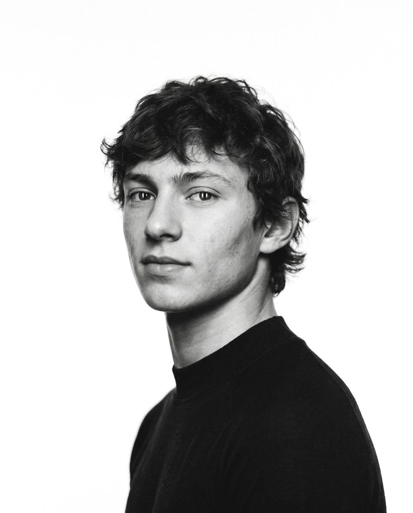
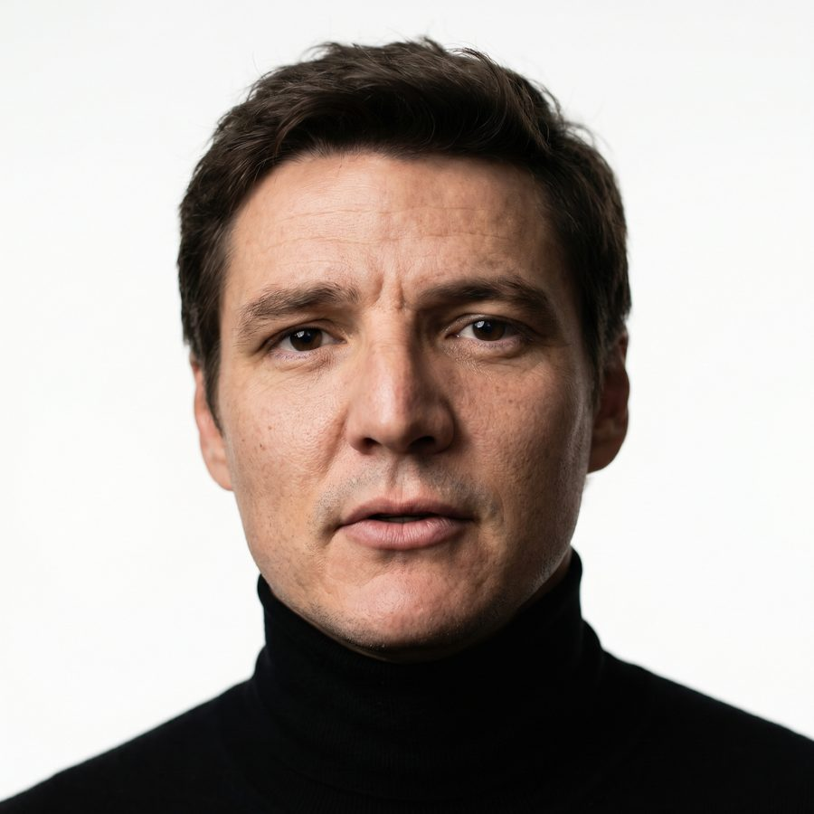
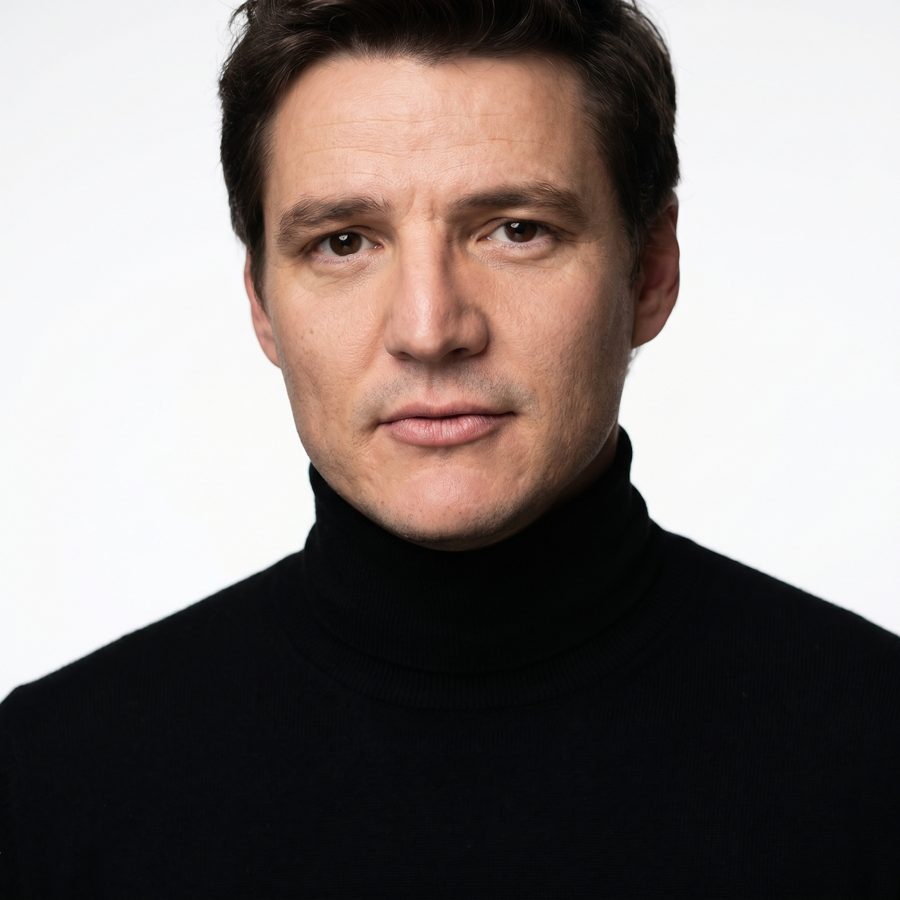

Come un brief a un fotografo.
Si scrive come si parla, a paragrafi. È naturale e il modello lo capisce bene. Però un dettaglio può perdersi in mezzo a una frase lunga, e per cambiarlo devi ritrovarlo.
Lezione 2 · Due modi di scrivere un prompt
Questo è il prompt vero che ha generato questo ritratto di Kimi Antonelli. Prima lo vedi come l’ho scritto io, a paragrafi. Poi premi il pulsante: le stesse informazioni finiscono in cassetti con un nome. Ogni colore è lo stesso pezzo nei due prompt. Più sotto, quattro ritratti dell’anno scorso generati con i due tipi di prompt, da confrontare.

Create one entirely new photorealistic black-and-white editorial studio portrait of Andrea Kimi Antonelli. Attach only the contact sheet titled "KIMI ANTONELLI · FOTOGRAFIE REALI" as IMAGE 1. Its six panels show real photographs of the same person in 2026. Use it for facial identity, apparent age, hair, and the natural post-helmet traces on his cheeks. Do not edit, blend, trace, or reproduce any panel. Do not use a previous generated portrait as a reference.
COMPOSITION AND VIEWPOINT ARE ESSENTIAL. This must not look like a frontal passport headshot. Make a vertical 4:5 medium-close portrait from mid-chest upward, with the camera pulled back enough to give the figure breathing room. Leave a clear field of uninterrupted white background above the hair, about 8–10% of the frame height, and visible white space on both sides of the head and shoulders, at least about 12% of the frame width on each side. The shoulders must remain fully inside the picture; no part of his hair or body touches a frame edge. The face should not dominate the entire canvas. Place him just slightly off centre, without a perfectly symmetrical composition.
Turn his torso approximately 25 degrees away from the camera, toward image left. Let his head turn only partway back, about 15–20 degrees from a straight-on view, while his eyes engage the lens. Both eyes remain visible, but one cheek is more prominent and the two shoulders are clearly at different depths. Keep his posture relaxed and upright, his mouth naturally closed, and his expression composed. Do not square the shoulders or flatten the face into a symmetrical front view.
Set the lens at about upper-chest height, approximately 25–30 cm below his eye line, and aim it gently upward by around 8 degrees. We should unmistakably feel that we are looking slightly up at him: the underside of the jaw and the near shoulder line are subtly visible. Keep the effect elegant and physically plausible, without enlarged chin, conspicuous nostrils, wide-angle distortion, or a heroic poster pose. Use an 85 mm portrait lens at a distance that still includes the mid-chest, not an extreme close-up.
Preserve Kimi's actual 2026 facial proportions from all six photographs. Give extra weight to recent panels 01 and 02 for present-day facial structure and panel 05 for his uncovered dark, tousled hair. Cross-check the other angles for his jaw, chin, cheekbones, nose, lips, eyes, ears, and neck. He is 20, with natural pores and adult facial definition. Do not smooth him into a childlike face or artificially age him with a broader jaw, heavy beard, or wrinkles. His recognizable identity takes priority over prettiness or stylization.
The portrait is taken shortly after he has removed a racing helmet. Preserve faint, temporary pressure impressions from the helmet's cheek pads: shallow, irregular changes in skin texture and soft tonal marks following the natural cheek contours, slightly different on each side. They should remain readable in black and white without becoming bruises, cuts, dirt, face paint, or symmetrical stripes. His hair is uncovered. Show a simple dark, unbranded racing base layer at the collar and shoulders. Do not copy caps, sponsor marks, race scenes, or expressions from the chart; do not show the helmet.
Use a seamless pure white studio background across the whole frame. Render true black and white, with detailed highlights, dimensional midtones, deep but readable dark fabric, and subtle photographic grain. Give the eyes the soft frontal light and slim vertical catchlights inspired by Martin Schoeller's close-up portraits. Position two tall, narrow soft sources outside the frame, slightly above eye level. Their reflections belong only inside the eyes; the lamps and panels themselves are never visible. Let the light shape his cheeks, jaw, and neck without flattening his face. No bright side bars, grey backdrop, halo, glowing eyes, studio equipment, text, graphics, trophy, car, or track.
Focus both eyes and the facial plane sharply at f/1.8; let the ears and far shoulder soften naturally. Keep depth of field optical and believable. Generate a new photograph from scratch, with realistic anatomy and one coherent lighting setup.
Crea un ritratto editoriale in studio, in bianco e nero, fotorealistico e completamente nuovo, di Andrea Kimi Antonelli. Allega come IMAGE 1 soltanto il provino intitolato «KIMI ANTONELLI · FOTOGRAFIE REALI». I suoi sei riquadri mostrano fotografie reali della stessa persona nel 2026. Usalo per l’identità del volto, l’età apparente, i capelli e i segni naturali lasciati dal casco sulle guance. Non modificare, fondere, ricalcare o riprodurre nessun riquadro. Non usare come riferimento un ritratto generato in precedenza.
INQUADRATURA E PUNTO DI VISTA SONO ESSENZIALI. Non deve sembrare una fototessera frontale. Fai un ritratto verticale 4:5, a mezzo busto stretto, dal centro del petto in su, con la camera abbastanza indietro da lasciare respiro alla figura. Lascia sopra i capelli una fascia di fondo bianco pulito, circa l’8–10% dell’altezza, e spazio bianco visibile ai lati di testa e spalle, almeno il 12% circa della larghezza per lato. Le spalle devono restare dentro l’immagine; capelli e corpo non toccano mai il bordo. Il volto non deve occupare tutta la tela. Mettilo appena fuori centro, senza una composizione perfettamente simmetrica.
Ruota il busto di circa 25 gradi rispetto alla camera, verso la sinistra dell’immagine. La testa torna indietro solo in parte, circa 15–20 gradi rispetto alla vista frontale, mentre gli occhi guardano in macchina. Entrambi gli occhi restano visibili, ma una guancia è più in evidenza e le due spalle sono chiaramente a profondità diverse. Postura rilassata ed eretta, bocca chiusa in modo naturale, espressione composta. Non mettere le spalle in squadra e non appiattire il volto in una vista frontale simmetrica.
Metti l’obiettivo all’altezza della parte alta del petto, circa 25–30 cm sotto la linea degli occhi, inclinato verso l’alto di circa 8 gradi. Deve sentirsi chiaramente che lo guardiamo un po’ dal basso: si intravedono il sotto della mascella e la linea della spalla più vicina. L’effetto resta elegante e fisicamente credibile, senza mento ingrandito, narici in evidenza, distorsione da grandangolo o posa eroica da manifesto. Usa un obiettivo da ritratto di 85 mm, a una distanza che comprenda ancora il centro del petto, non un primissimo piano.
Mantieni le proporzioni reali del volto di Kimi nel 2026, prese da tutte e sei le fotografie. Dai più peso ai riquadri recenti 01 e 02 per la struttura attuale del volto, e al riquadro 05 per i capelli scuri e spettinati, senza cappellino. Controlla con le altre angolazioni mascella, mento, zigomi, naso, labbra, occhi, orecchie e collo. Ha 20 anni, pori naturali e lineamenti adulti. Non addolcirlo in un viso da bambino e non invecchiarlo con una mascella più larga, barba folta o rughe. La sua identità riconoscibile conta più della bellezza o dello stile.
Il ritratto è scattato poco dopo che si è tolto il casco da corsa. Conserva i lievi segni temporanei lasciati dalle imbottiture delle guance: piccole irregolarità nella texture della pelle e morbide variazioni di tono che seguono il contorno naturale delle guance, un po’ diverse da un lato all’altro. Devono leggersi anche in bianco e nero senza diventare lividi, tagli, sporco, trucco o strisce simmetriche. I capelli sono scoperti. Mostra un semplice sottotuta da corsa scuro e senza marchi, al collo e sulle spalle. Non copiare dal provino cappellini, sponsor, scene di gara o espressioni; non mostrare il casco.
Usa un fondale da studio bianco puro e continuo su tutta l’immagine. Rendi un vero bianco e nero, con luci ricche di dettaglio, mezzitoni con volume, tessuto scuro profondo ma leggibile e una leggera grana fotografica. Dai agli occhi la luce frontale morbida e i sottili riflessi verticali ispirati ai primi piani di Martin Schoeller. Metti due sorgenti morbide, alte e strette, fuori campo, appena sopra la linea degli occhi. I loro riflessi stanno solo dentro gli occhi; lampade e pannelli non si vedono mai. La luce modella guance, mascella e collo senza appiattire il volto. Niente barre luminose ai lati, fondale grigio, alone, occhi che brillano, attrezzatura da studio, testo, grafiche, trofeo, auto o pista.
Metti a fuoco nitidi entrambi gli occhi e il piano del volto a f/1.8; orecchie e spalla lontana si ammorbidiscono in modo naturale. La profondità di campo resta ottica e credibile. Genera una fotografia nuova da zero, con anatomia realistica e un’unica illuminazione coerente.
{ "task": "new photorealistic black-and-white editorial studio portrait, generated from scratch",
"subject": "Andrea Kimi Antonelli",
"reference": {
"image_1": "contact sheet 'KIMI ANTONELLI · FOTOGRAFIE REALI': six real photos from 2026",
"use_for": ["facial identity", "apparent age", "hair", "post-helmet traces on the cheeks"],
"do_not": ["edit, blend, trace or reproduce any panel", "use previous generated portraits"]
}, "composition": {
"format": "vertical 4:5",
"framing": "medium-close, from mid-chest up, not a passport headshot",
"space_above_hair": "8-10% of the frame height, plain white",
"space_on_each_side": "at least 12% of the frame width",
"edges": "shoulders fully inside, hair and body never touch the frame",
"placement": "slightly off centre, not symmetrical"
}, "pose": {
"torso": "turned about 25° toward image left",
"head": "turned back 15-20° from straight-on",
"eyes": "looking into the lens, both visible",
"shoulders": "at clearly different depths, not squared",
"posture": "relaxed and upright",
"expression": "composed, mouth naturally closed"
}, "camera": {
"lens": "85 mm portrait lens",
"height": "upper chest, 25-30 cm below the eye line",
"tilt_up_degrees": 8,
"feeling": "looking slightly up at him, elegant and plausible",
"avoid": ["enlarged chin", "conspicuous nostrils", "wide-angle distortion", "heroic poster pose"]
}, "face": {
"age": 20,
"proportions": "his real 2026 proportions from all six photos",
"most_important_panels": { "01_and_02": "present-day facial structure", "05": "uncovered dark tousled hair" },
"skin": "natural pores, adult facial definition",
"avoid": ["childlike smoothing", "broader jaw", "heavy beard", "wrinkles"],
"priority": "recognizable identity over prettiness"
}, "after_the_helmet": {
"cheek_marks": "faint temporary impressions of the helmet pads, slightly different on each side",
"not": ["bruises", "cuts", "dirt", "face paint", "symmetrical stripes"],
"hair": "uncovered",
"clothing": "simple dark racing base layer, no logos",
"do_not_show": ["caps", "sponsors", "race scenes", "the helmet"]
}, "light_and_look": {
"background": "seamless pure white",
"color": "true black and white, subtle photographic grain",
"tones": "detailed highlights, dimensional midtones, deep but readable blacks",
"inspiration": "Martin Schoeller's close-up portraits",
"lights": "two tall narrow soft sources outside the frame, slightly above eye level",
"catchlights": "slim and vertical, only inside the eyes",
"never_show": ["lamps", "grey backdrop", "halo", "glowing eyes", "text", "trophy", "car", "track"]
}, "focus": {
"aperture": "f/1.8",
"sharp": "both eyes and the face",
"soft": "ears and far shoulder",
"overall": "one coherent lighting setup, realistic anatomy"
}}
{ "task": "nuovo ritratto editoriale in studio, bianco e nero, fotorealistico, generato da zero",
"subject": "Andrea Kimi Antonelli",
"reference": {
"image_1": "provino 'KIMI ANTONELLI · FOTOGRAFIE REALI': sei foto reali del 2026",
"use_for": ["identità del volto", "età apparente", "capelli", "segni del casco sulle guance"],
"do_not": ["modificare, fondere, ricalcare o riprodurre un riquadro", "usare ritratti generati in precedenza"]
}, "composition": {
"format": "verticale 4:5",
"framing": "mezzo busto stretto, dal centro del petto in su, non una fototessera",
"space_above_hair": "8-10% dell’altezza, bianco pulito",
"space_on_each_side": "almeno il 12% della larghezza",
"edges": "spalle tutte dentro, capelli e corpo non toccano mai il bordo",
"placement": "appena fuori centro, non simmetrico"
}, "pose": {
"torso": "ruotato di circa 25° verso la sinistra dell’immagine",
"head": "girata indietro di 15-20° rispetto alla vista frontale",
"eyes": "guardano in macchina, entrambi visibili",
"shoulders": "a profondità chiaramente diverse, non in squadra",
"posture": "rilassata ed eretta",
"expression": "composta, bocca chiusa in modo naturale"
}, "camera": {
"lens": "obiettivo da ritratto 85 mm",
"height": "parte alta del petto, 25-30 cm sotto la linea degli occhi",
"tilt_up_degrees": 8,
"feeling": "lo guardiamo un po’ dal basso, elegante e credibile",
"avoid": ["mento ingrandito", "narici in evidenza", "distorsione da grandangolo", "posa eroica da manifesto"]
}, "face": {
"age": 20,
"proportions": "le sue proporzioni reali del 2026, da tutte e sei le foto",
"most_important_panels": {
"01_and_02": "struttura attuale del volto",
"05": "capelli scuri spettinati, scoperti"
},
"skin": "pori naturali, lineamenti adulti",
"avoid": ["viso addolcito da bambino", "mascella più larga", "barba folta", "rughe"],
"priority": "identità riconoscibile prima della bellezza"
}, "after_the_helmet": {
"cheek_marks": "lievi segni temporanei delle imbottiture del casco, un po’ diversi da un lato all’altro",
"not": ["lividi", "tagli", "sporco", "trucco", "strisce simmetriche"],
"hair": "scoperti",
"clothing": "semplice sottotuta da corsa scuro, senza loghi",
"do_not_show": ["cappellini", "sponsor", "scene di gara", "il casco"]
}, "light_and_look": {
"background": "fondale bianco puro continuo",
"color": "vero bianco e nero, leggera grana fotografica",
"tones": "luci ricche di dettaglio, mezzitoni con volume, neri profondi ma leggibili",
"inspiration": "i primi piani di Martin Schoeller",
"lights": "due sorgenti morbide, alte e strette, fuori campo, appena sopra gli occhi",
"catchlights": "sottili e verticali, solo dentro gli occhi",
"never_show": ["lampade", "fondale grigio", "alone", "occhi che brillano", "testo", "trofeo", "auto", "pista"]
}, "focus": {
"aperture": "f/1.8",
"sharp": "entrambi gli occhi e il volto",
"soft": "orecchie e spalla lontana",
"overall": "un’unica illuminazione coerente, anatomia realistica"
}}
Tocca un cassetto per vederlo da solo, nei due prompt.
Si scrive come si parla, a paragrafi. È naturale e il modello lo capisce bene. Però un dettaglio può perdersi in mezzo a una frase lunga, e per cambiarlo devi ritrovarlo.
Ogni informazione ha un’etichetta: composition, camera, light. Si vede subito se manca qualcosa e si cambia un valore solo, per esempio l’angolo della camera, senza toccare il resto.
Il JSON non fa capire al modello cose che il narrativo non dice. È un modo di mettere in ordine. Il risultato dipende da che cosa scrivi, non dalle parentesi graffe.
L’anno scorso · lo stesso volto, due prompt
Ho generato quattro ritratti due volte: una volta con il prompt narrativo, una volta con il JSON. I due prompt dicono le stesse cose: li ha scritti il Generatore di micro-espressioni partendo dalle stesse scelte. Trascina la linea per confrontare, poi leggi i prompt. Sotto ogni ritratto c’è come la vedo io: non sempre vince lo stesso.


Prompt originali, così come sono usciti dal generatore l’anno scorso (con qualche errore che poi ho corretto, per esempio «frontal pose pose»).
È il modo migliore per descrivere sensazioni e atmosfere. Lascia all’IA un margine di interpretazione, utile quando cerchi idee. Ma se devi cambiare un solo dettaglio, per esempio l’espressione, rischi di cambiare anche il resto.
Luce, camera, espressione e materiali stanno in cassetti separati. Cambi un valore e il resto resta com’era: per questo è comodo quando lavori a una serie o devi correggere un dettaglio. È più rigido quando vuoi comunicare un’atmosfera.
Con lo stesso prompt, due immagini non saranno mai identiche. Il prompt restringe il recinto delle possibilità, ma dentro il recinto il modello pesca sempre a caso. Lo avete visto nel Laboratorio della Varianza.